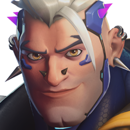
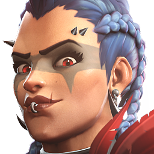
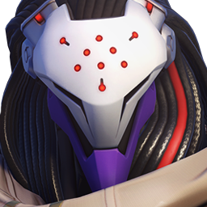

← Retour à la classification des rôles
Division : Tank
La Ligne de Front
Le rôle de Tank dépasse largement la simple capacité à encaisser de lourds dégâts ou à brandir un bouclier. Ce sont les maîtres de l'espace et du tempo. Un Tank est le fer de lance de l'escouade : il prend et contrôle le terrain, dicte le plan de jeu et désigne les cibles prioritaires (le "shotcalling").
Ce rôle exige une conscience tactique absolue. Un bon Tank doit maîtriser l'art du "yoyo" : s'avancer pour créer des ouvertures et mettre la pression sur la ligne ennemie, tout en sachant reculer instantanément pour protéger sa propre "backline" (les alliés vulnérables en retrait) lorsque la situation l'exige.
Pour une synergie optimale, cette division est catégorisée en trois sous-rôles tactiques. Sélectionnez une classification pour accéder rapidement aux fiches correspondantes :
Initiateurs (Initiator)
↑ Remonter| Agent | Doctrine (Compo) | Extrait d'Archive (Histoire) | Complexité |
|---|---|---|---|
 Bouldozer
Bouldozer
|
Dive | Un hamster génétiquement modifié, hyper-intelligent, conduisant un méca de combat sphérique destructeur. | ★★★★★ |
|
 Danger |
Dive | Tête brûlée affiliée aux Phreaks, semant le chaos sur le champ de bataille avec son équipement instable. | ★★★☆☆ |
 D.Va
D.Va
|
Dive | Ancienne championne du monde d'e-sport devenue pilote d'élite pour défendre la Corée du Sud. | ★★★☆☆ |
 Doomfist
Doomfist
|
Dive | Ancien chef de La Griffe, il est porté disparu et présumé mort suite à sa défaite décisive contre Vendetta. | ★★★★★ |
 Winston
Winston
|
Dive | Un gorille génétiquement modifié, scientifique brillant et véritable cœur battant de la nouvelle équipe Overwatch. | ★★☆☆☆ |
Piliers (Stalwart)
↑ Remonter| Agent | Doctrine (Compo) | Extrait d'Archive (Histoire) | Complexité |
|---|---|---|---|
 Domina
Domina
|
Poke | Vice-présidente de Vishkar, elle s'est alliée à Vendetta pour accomplir sa vengeance et soutient désormais activement La Griffe. | ★★★☆☆ |
|
 Junker Queen |
Brawl | La souveraine impitoyable et sanguinaire de Junkertown, menant ses troupes depuis la première ligne. | ★★★☆☆ |
|
 Ramattra |
Brawl / Poke | Le chef visionnaire et radical du Secteur Zéro, prêt à tout pour assurer la survie du peuple omniaque. | ★★★☆☆ |
 Reinhardt
Reinhardt
|
Brawl | Un vétéran allemand engoncé dans une armure lourde, vivant toujours selon le code d'honneur des Croisés. | ★★☆☆☆ |
 Sigma
Sigma
|
Poke | Astrophysicien instable manipulant la gravité, ce sujet dangereux fut strictement confiné par Vendetta suite à son effondrement psychologique. | ★★★★☆ |
Cogneurs (Bruiser)
↑ Remonter| Agent | Doctrine (Compo) | Extrait d'Archive (Histoire) | Complexité |
|---|---|---|---|
 Chopper
Chopper
|
Brawl / Poke | Un tueur en série impitoyable, errant dans les terres désolées australiennes comme garde du corps. | ★★☆☆☆ |
 Mauga
Mauga
|
Poke / Brawl | Redoutable mercenaire samoan lourdement armé. Vendetta l'a récemment déployé à New Junk City pour rallier les Junkers à La Griffe. | ★★☆☆☆ |
 Orisa
Orisa
|
Poke / Brawl | Une centaure robotique récemment reprogrammée et améliorée pour être la protectrice implacable de Numbani. | ★★☆☆☆ |
 Zarya
Zarya
|
Brawl | Athlète russe ayant sacrifié sa carrière pour combattre la menace omniaque, elle a récemment rejoint les rangs opérationnels d'Overwatch. | ★★★☆☆ |